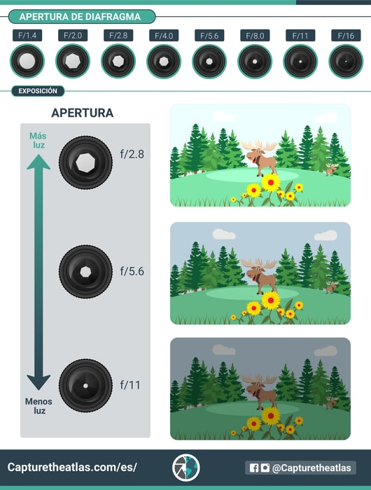

Apertura
La apertura de diafragma es la apertura del objetivo que determina cuánta luz pasa a través de la lente al sensor de la cámara.
Por esta razón, la exposición y la apertura están completamente relacionadas. Si usas una apertura más amplia, tu objetivo permitirá que entre más luz a la cámara y la imagen estará más expuesta. Si, por el contrario, cierras tu apertura y bloqueas la cantidad de luz que pasa a través de la lente, tu imagen será más oscura y estará menos expuesta.
